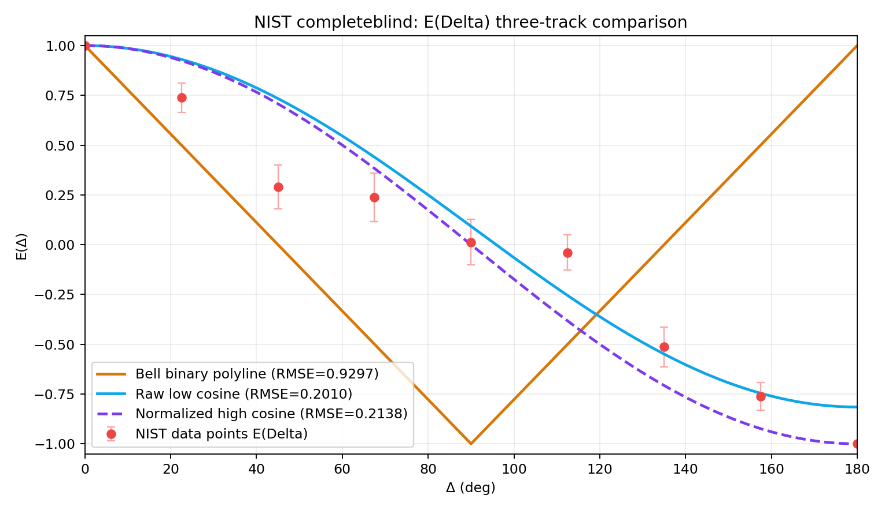

NIST E(Delta) 三线附录页
独立附录，不修改原看板；用于展示“实测点 vs 三条参考曲线”的核心图证。
图5：NIST E(Delta) 三线对照

关键结论
- 在当前映射定义（slot 0..7 为 +1，8..15 为 -1）下，实测点对连续原始矮余弦拟合最好。
- RMSE：Bell 折线 0.929737；原始矮余弦 0.200994；归一化高余弦 0.213850。
方法文件
- 主结果摘要：
NIST_E_DELTA_THREE_TRACKS_SUMMARY.md
- 映射敏感性：
NIST_E_DELTA_MAPPING_SENSITIVITY.md
- 生成脚本：
scripts/explore/explore_nist_e_delta_three_tracks.py
- 敏感性脚本：
scripts/explore/explore_nist_e_delta_mapping_sensitivity.py
返回 Public Validation Pack 首页